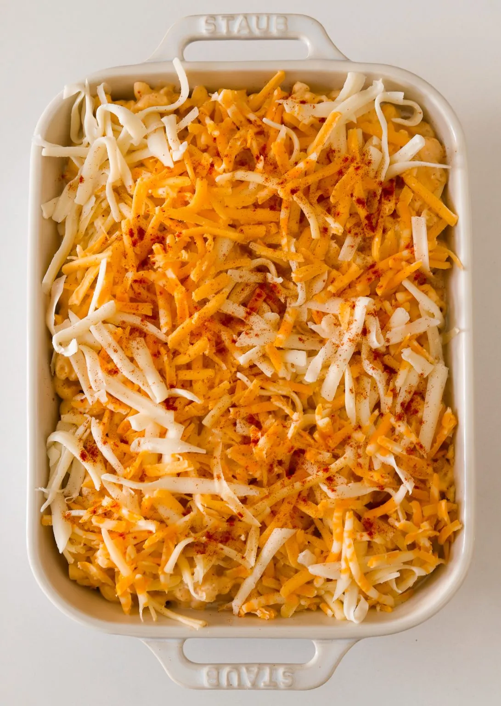
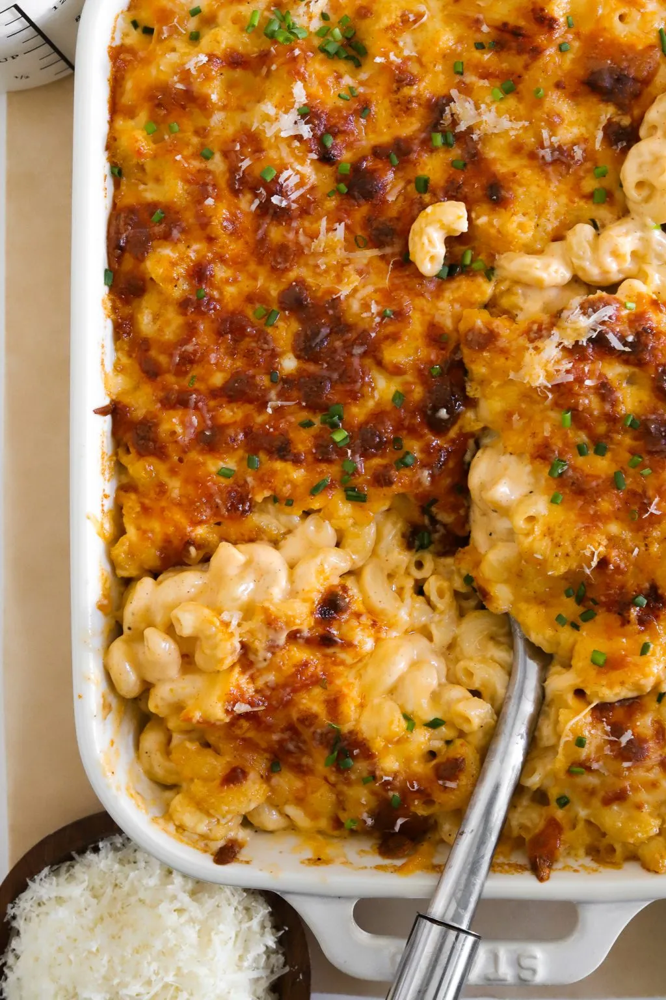

Regardless of which shape you choose, cook it at al dente or a minute under since it'll continue to cook in the oven. This way, it won't end up overcooked and mushy. Once your pasta is ready, drain it thoroughly but don't rinse it. The starch left on the pasta will help the sauce cling better!
CREATING A DREAMY CHEESE SAUCE
Here's a tip: whisk in minced garlic after your roux has cooked to infuse it with flavor before adding the liquid. You can also saute the garlic in the butter before adding the flour if that's wasier for you. Slowly pour in warm heavy cream while whisking continuously to avoid lumps. TRUST ME using warm cream instead of cold makes all the difference- it helps the sauce stay smooth and prevents it from breaking.
Once the cream is incorporated, mix in the softened cream cheese for that extra creamy texture. Then,season it up with a mix of dry mustard powder, smoked paprika, a hint of nutmeg, and a dash of cayenne for a subtle kick. These spices elevate the flavor profile without overpowering it. Season with salt and pepper to taste. DON'T go too crazy with the salt though because keep in mind, the cheese will melt in and naturally salt the sauce. You can always add more salt later at the end after tasting.
CHEESE SELECTION & GRATING TIPS
Here's the fun part: cheese! I love using a blend of sharp cheddar, colby jack, and smoked gouda, but there are so many delicious options out there:
Creamy, Melty Cheeses: These cheeses melt beautifully and give your sauce a smooth, velvety texture:- Fontina: Buttery and rich with a slighty nutty flavor.
- Gruyère: Adds a nutty, slightly salty taste, perfect for a more sophisticated flavor profile.
- Mozzarella: Super gooey with a mild flavor — great for that stretchy, melty goodness.
- Monterey Jack: Mild with a creamy texture, great for adding extra meltiness.
- Havarti: Buttery and soft, with a delicate flavor that pairs well with other cheeses.
Bold, Flavorful Cheeses: These cheeses pack more of a punch and add depth to your mac and cheese:
- Pecorino Romano: Sharp and salty, a little goes a long way! It adds a nice tang.
- Parmesan: Nutty and salty, perfect for adding an umami boost. Best sprinkled on top.
- Asiago: Sharp with a nutty, buttery flavor, perfect if you want a bolder taste.
- White Cheddar: Stronger and tangier than regular cheddar, adds a rich depth.
Tip: Always grate your own cheese instead of using pre-shredded. Pre-shredded cheese is coated with anti-caking agents that prevent it from melting smoothly. Grating your own cheese not only melts better but also has a fresher taste. It might take a few extra minutes, but it's totally worth it for that silky, smooth sauce.
To finish the sauce, reduce the heat to low and gradually stir in the shredded cheeses. Keep stirring until everything is completely melted and velvety smooth. At this point, taste and adjust any seasonings to your liking.
ASSEMBLING & BAKING
With the pasta cooked and the sauce ready, combine everything in a large baking dish, making sure each piece of pasta is generously coated. For the topping, sprinkle on more shredded cheese. You can stick with a single type like Colby Jack or mix a few varieties to get that melty, golden crust. I recommend using a cheese that is more creamy on top so it melts better without drying out under the broiler like Colby Jack, Monterrey Jack, or even Mozzarella.
Bake it in the oven until everything is bubbling and heated through. For that perfect crispy finish, switch to broil for a couple of minutes — just keep a close watch to avoid burning it. The broiled top adds a wonderful contrast to the creamy interior!
EXTRA TIPS, VARIATIONS & TRICKS
Add-ins for extra flavor:- Caramelized onions for a more sweet note.
- Stir in cooked chicken or lobster if you're feeling fancy and need some protein!
- For some green, fold in chopped and blanched broccoli.
- Mix in some butternut squash puree for butternut squash mac and cheese!
- Make it crunchy: Mix up a breadcrumb topping for extra crunch. Combine panko breadcrumbs with melted butter, garlic powder, and a sprinkle of Parmesan. Add it on top before baking. I personally am not a fan of breadcrumbs on Mac & Cheese but here is the option if you like it.
MAKE-AHEAD & STRONG LEFTOVERS
This mac and cheese is great for making ahead. You can prepare everything up to the baking step, cover it tightly with foil, and store it in the fridge for up to a day. When you're ready to serve, bake straight from he fridge, adding a few extra minutes to the bake time.
For leftovers (if you're lucky enough to have any!), store in an airtight container in the fridge. When reheating, add a splash of milk or cream to bring back that creamy consistency. You can warm it up in the oven or microwave — just be careful not to overheat, or the sauce can separate.
This dish also freezes beautifully! Let it cool completely before transferring to an airtight container. It'll keep in the freezer for a couple of months. When you're ready to enjoy, let it thaw overnight in the fridge and reheat in the oven covered with foil to keep it from drying out or pop it in the microwave.
LET'S DIG IN!
Serve it fresh out of the oven, and get ready for all the oohs and ahhs. The combination of creamy pasta, rich cheese sauce, and that crispy top is pure comfort. Pair it with a light salad or roasted veggies for a balanced meal, or go all out with your favorite mains. No matter how you serve it, this baked mac and cheese is sure to be a hit!
If you tried this recipe and loved it, drop by down below and let me know how you liked it with a rating and comment! Feel free to also leave a question there about this recipe and I'll get right back to it.

SIDE DISH
THE BEST MAC AND CHEESE
Macaroni and cheese is the ultimate comfort food and the best side on the dinner table! It's so ooey and goeey on the inside and then perfectly golden and crispy on the outside - it's the best of both worlds. This truly is the only Mac and Cheese recipe you'll ever need!
PREP TIME: 30 MINUTES COOK TIME 45 MINUTES
TOTAL TIME: 1 HOUR 15 MINUTES YIELDS: 6 TO 8
IGNREDIENTS
PASTA- 1 pound large elbow macaroni
- salt, to cook pasta
- 6 tablespoons unsalted butter
- 3 tablespoons all-purpose flour
- 1 tablespoon minced garlic
- 3 3/4 cup warm heavy cream
- 3 tablespoons cream cheese, softened
- 1 1/2 cup sharp cheddar, shredded
- 1 cup Colby jack, shredded
- /2 cup smoked gouda, shredded
- 2 teaspoons smoked paprika
- 1 1/2 teaspoon dry mustard powder
- 1/2 teaspoon black pepper more to taste
- 1/2 to 1 teaspoon salt, to taste
- pinch of nutmeg
- pinch of cayenne
-
OTHER
- 2 cups shredded cheese, of choice
- optional: chopped parsley or chives and grated paramesan on top
- Bring a large pot of salted water to a boil. Add pasta and cook a minute below al dente. The pasta will finish cooking in the oven.
- Heat a saucepan or pot over medium heat. Add the butter. Once melted, whisk in the flour and cook for 2 to 3 minutes until it just starts to bubble and turns a yellow-golden color.
- Add in the garlic and saute with the roux for another minute.
- Pour in the heavy cream slowly and whisk continuously until smooth. Then add the cream cheese, dry mustard powder, smoked paprika, black pepper, nutmeg, cayenne powder, and salt. Whisk together until smooth. Continue to cook the sauce for 3 to 4 minutes or until it thickens.
- Reduce the heat to low or take off the heat and add the sharp cheddar, Colby jack, and smoked gouda. Whisk together until there are no more lumps and the sauce is completely smooth. Taste and adjust anything to your liking.
- Once the pasta is done cooking, drain it and toss it into the sauce immediately. Mix together in a large baking dish.
- Cover the top with your shredded cheese of choice. I personally love opting for just Colby Jack or a blend of the three cheeses.
- Bake at 350°F for 15 minutes. Then turn to broil for a few minutes just until the top is golden and crispy - make sure to monitor it closely.
- Top it off with chopped parsley or chives and grated parmesan and enjoy!
COOK THE PASTA
MAKE THE CHEESE SAUCE
ASSEMBLY & BAKING